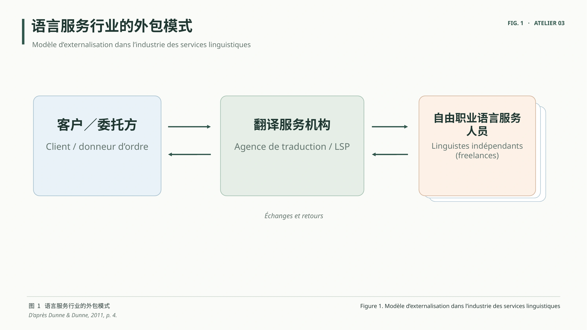
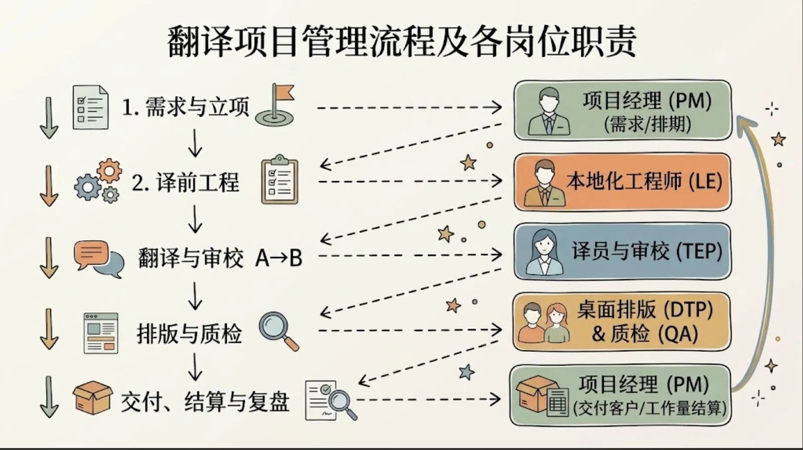
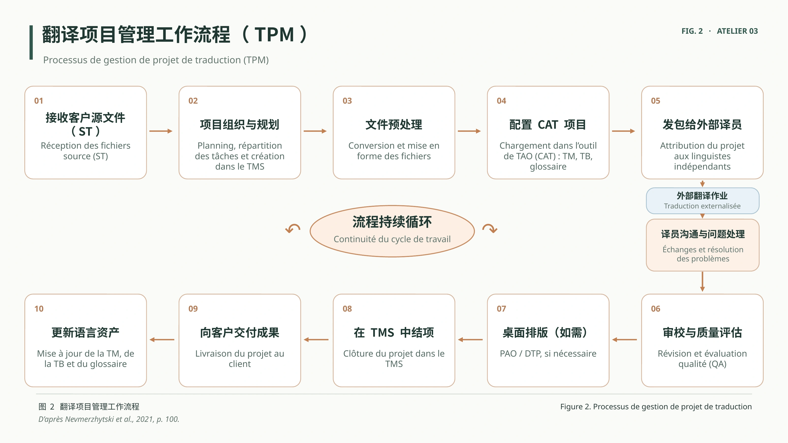
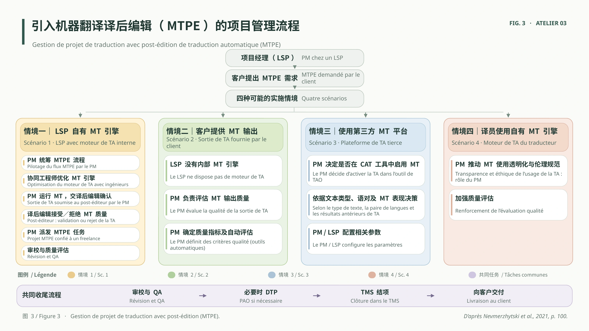

PARTIE 01 · PROCESSUS
把项目看成三条协作工作线
Trois lignes de travail coordonnées
PM
管理线
Gestion接单与需求分析排期和发包跟进与协调验收和交付
LE
技术线
Ingénierie文件预处理CAT项目配置目标文件导出语言资产维护
T · E · P
语言线
Production翻译 T审校 E校对 P语言质量核查
↗
项目经理的关键职责不是亲自完成全部工序
而是让人员、工具、时间、质量要求与客户需求协调一致。
VOCABULAIRE PROFESSIONNEL · 01
行业行话｜工具与语言资产
Outils de gestion, outils de TAO et ressources linguistiques
TMS
Translation Management System
项目管理工具
Système de gestion de traductions
CAT / TAO
计算机辅助翻译工具Outil de traduction assistée par ordinateur
TM
翻译记忆库Mémoire de traduction
TB
术语库Base terminologique
MT / TA
机器翻译Traduction automatique
MTPE
机器翻译译后编辑Post-édition de traduction automatique
CAT / TAO 是工作环境；TM 和 TB 是可复用的语言资产；MT 是可集成的技术资源。
VOCABULAIRE PROFESSIONNEL · 02
行业行话｜工序、质量与本地化测试
Production, assurance qualité et localisation
工序与协作
TEP翻译—审校—校对Traduction · Révision · Relecture
发包任务分派／外包Attribution / Sous-traitance
Query Log问题记录表Registre des questions
回填译文重新集成至目标文件Réintégration des traductions
质量与测试
LQA语言质量保证Assurance qualité linguistique
In-Context QA语境内／界面内质量检查Contrôle qualité en contexte
UI/UX QA界面及体验质量检查Contrôle de l’interface et de l’expérience utilisateur
伪翻译测试检测界面长度、字符与布局等问题Test de pseudo-localisation
“抽词”若指术语识别，通常是 extraction terminologique；若指软件资源中的文本字符串提取，应称 extraction des chaînes。两者需区分。
PARTIE 01 · MATRICE RACI
RACI｜把岗位分工转化为责任分配
Qui réalise ? Qui assume la responsabilité finale ?
R
Responsible
执行者
Réalise la tâche
谁实际完成工作？A
Accountable
最终责任人
Valide et répond du résultat
谁对结果承担最终责任？C
Consulted
征询对象
Consulté avant la décision
做决定前应征询谁？I
Informed
知会对象
Informé de l’avancement
谁需要了解进度和结果？一个任务通常指定一位 AR 可以由多人承担；R 与 A 也可以是同一人。
PARTIE 01 · MATRICE RACI
示例｜翻译项目的 RACI 矩阵
Exemple de répartition des responsabilités
| 工作任务 / Tâche | PM | LE | 译员 T | 审校 E | QA |
|---|---|---|---|---|---|
| 需求确认与项目规划 | A/R | C | I | I | I |
| 文件预处理 / CAT 配置 | A | R | C | I | I |
| 翻译生产 | A | C | R | C | I |
| 语言审校 | A | I | C | R | C |
| 交付前质量核查 | A | C | C | C | R |
| 正式交付与结项 | A/R | I | I | I | C |
教学示意矩阵，并非所有公司的统一制度；实际分工应依据组织结构、合同及项目风险调整。

02
DE LA THÉORIE À LA PRATIQUEAI赋能
进入下一环节 · 客户微信情境 →AI赋能
翻译项目管理
Planification · Répartition · Suivi · Livraison